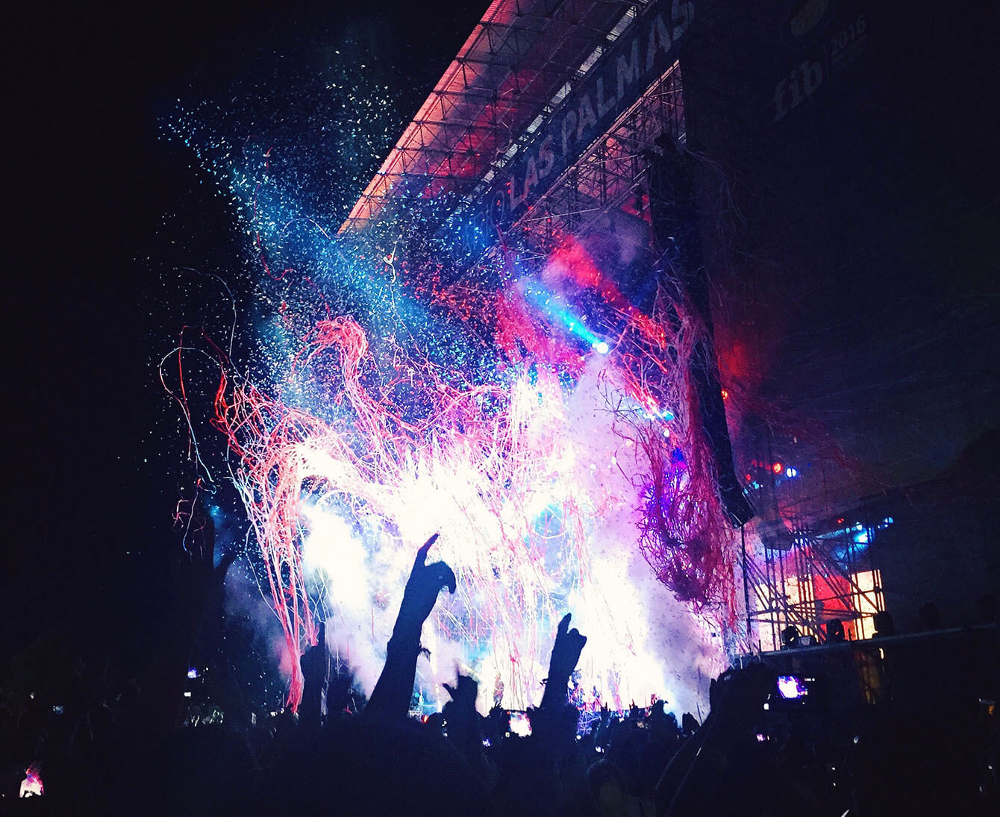

Atarashii gakko en Head in the Clouds
Atarashii gakko en Head in the Clouds
Atarashii Gakko está liderando una revolución, ¡y ha llegado a Los Ángeles! El grupo de chicas de jazz-rock japonés firmó con el sello estadounidense 88rising a principios de este año, y por fin ha tenido la oportunidad de debutar en los escenarios de Estados Unidos. Atarashii Gakko abrió el primer día del festival Head in the Clouds e interpretó ocho canciones en total, una mezcla de temas nuevos y antiguos. Entre los ocho temas había una canción inédita, un nuevo tema que formará parte de su próximo EP Snacktime, que saldrá a la venta el 12 de noviembre.
Si hay algo que hay que saber sobre Atarashii Gakko es que tienen un estilo único, que combina la cultura japonesa con la música y la actuación. Ataviadas con sus seifuku, entraron en el escenario al son de las campanas de la escuela: Mizyu con sus características coletas, Suzuka con gafas, Rin con sus encantadores rizos y Kanon con su elegante pelo liso. Atarashii Gakko prosiguió con su escenario Human Drum, comenzando el festival Head in the Clouds con una explosión.
Su líder, Suzuka, dirigió el baile inspirado en el taiko, tocando los miembros como si fueran tambores. El grupo estalló en un baile de grupo completo, que dio paso a una serie de volteretas y al siguiente tema, Final Humanity. En una actuación cuidadosamente elaborada, el cuarteto interpretó el tema de piano, con una mezcla de rock, con voces firmes, una serie de elevaciones y pausas de baile intensas.
Atarashii Gakko comenzó el inicio de Night Before the Exam sacando cintas rojas y utilizando el atrezzo para expresar sus sentimientos.Love Revolt fue introducido por Suzuka preguntando:
Sensei, ¿es un crimen si confieso mis sentimientos por ti?
Con saltos de niña y una coreografía desgarradora, las chicas expresaron sus complicados sentimientos a través del baile.
Antes de su siguiente tema, las chicas dieron las gracias al público y se presentaron en un pequeño ment, haciendo una pequeña pausa. A continuación, Suzuka preguntó al público si les gustaba el hip-hop, presentando su siguiente etapa: una versión de su grupo favorito, Beastie Boys. A continuación, se pusieron manos a la obra, colocándose gorras y chalecos de construcción sobre sus uniformes. Atarashii Gakko coreó We are Beastie Girls, dando comienzo a una etapa de covers de Intergalactic, con mucho rap.
Una vez que terminaron con el trabajo, empezaron con NAINAINAI, que salió en enero de este año. Con una coreografía inspirada en el hip-hop y mucho rap, las chicas interpretaron el tema con inmensa energía.
¡Los bailarines de apoyo se unieron al escenario durante el final de Atarashii Gakko El grupo presentó su nueva canción de rock con muchos graves, Free Your Mind, en una enérgica actuación con muchos gritos y aplausos.
Las bailarinas de apoyo abandonaron el escenario en un frenesí después de que fuera invadido por una entidad extranjera alta y verde. En una lucha coreografiada, las chicas levantaron su piña contra el alienígena, iniciando el comienzo de su reciente single Pineapple Kryptonite.
Si empezaron con una explosión, el grupo terminó con una explosión. Su baile fue una demostración perfecta de su experiencia en la danza y su entrenamiento en gimnasia, realizando volteretas, paradas de cabeza y otras acrobacias en medio del escenario. Al final de la canción, todas las chicas menos una se habían caído. En un final épico, durante su nana final, como dice la canción, Suzuka atravesó al alienígena con una piña y éste se derrumbó.
Al final de la canción, Mizyu, Kanon y Rin se unieron a Suzuka en pie. Con un breve agradecimiento, Atarashii gakko se inclinó, haciendo su salida al trote.